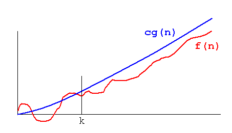

(definition)
Definition: A theoretical measure of the execution of an algorithm, usually the time or memory needed, given the problem size n, which is usually the number of items. Informally, saying some equation f(n) = O(g(n)) means it is less than some constant multiple of g(n). The notation is read, "f of n is big oh of g of n".
Formal Definition: f(n) = O(g(n)) means there are
positive constants c and k, such that 0 ≤ f(n) ≤ cg(n) for all n ≥ k.
The values of c and k must be fixed for the function f and must not
depend on n.

Also known as O.
See also
Ω(n), ω(n), Θ(n),  , little-o notation, asymptotic upper bound, asymptotically tight bound, NP, complexity, model of computation.
, little-o notation, asymptotic upper bound, asymptotically tight bound, NP, complexity, model of computation.
Note: As an example, n² + 3n + 4 is O(n²), since n² + 3n + 4 < 2n² for all n > 10. Strictly speaking, 3n + 4 is O(n²), too, but big-O notation is often misused to mean equal to rather than less than. The notion of "equal to" is expressed by Θ(n).
The importance of this measure can be seen in trying to decide whether an algorithm is adequate, but may just need a better implementation, or the algorithm will always be too slow on a big enough input. For instance, quicksort, which is O(n log n) on average, running on a small desktop computer can beat bubble sort, which is O(n²), running on a supercomputer if there are a lot of numbers to sort. To sort 1,000,000 numbers, the quicksort takes 20,000,000 steps on average, while the bubble sort takes 1,000,000,000,000 steps!
Any measure of execution must implicitly or explicitly refer to some computation model. Usually this is some notion of the limiting factor. For one problem or machine, the number of floating point multiplications may be the limiting factor, while for another, it may be the number of messages passed across a network. Other measures which may be important are compares, item moves, disk accesses, memory used, or elapsed ("wall clock") time.
[Knuth98, 1:107], [HS83, page 31], and [Stand98, page 466] use |f(n)| ≤ c|g(n)|. In computational complexity theory "only positive functions are considered, so the absolute value bars may be left out." (Wikipedia, "Big O notation"). This definition after [CLR90, page 26].
Strictly, the character is the upper-case Greek letter Omicron, not the letter O, but who can tell the difference?
Author: PEB
Wikipedia Big O notation. Big O is a Landau Symbol.
Donald E. Knuth, Big Omicron and Big Omega and Big Theta, SIGACT News, 8(2):18-24, April-June 1976.
If you have suggestions, corrections, or comments, please get in touch with Paul E. Black.
Entry modified 11 March 2005.
HTML page formatted Mon Sep 11 09:46:01 2006.
Cite this as:
Paul E. Black, "big-O notation", in
Dictionary of Algorithms and Data
Structures [online], Paul E. Black, ed.,
U.S. National Institute of
Standards and Technology. 11 March 2005. (accessed TODAY)
Available from: http://www.nist.gov/dads/HTML/bigOnotation.html